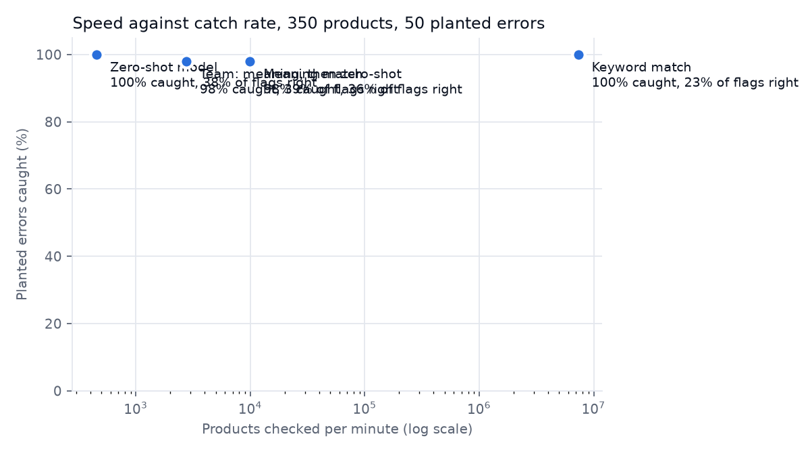

Which products are filed in the wrong category?
350 products · 50 planted errors · data: Open Food Facts (ODbL)01Finding
Meaning match ranked best: 33 real errors among its 50 most suspicious products, at 29,353 products a minute.
At scale: 5,000 products in 1.45 minutes; 664 sent to the slow model; 1,366 flagged.
02Checkers compared
| Checker | Real in top 50 | Caught | False alarms | Precision | Per minute |
|---|---|---|---|---|---|
| Keyword match | 24 | 50/50 | 164 | 0.23 | 6,701,681 |
| Meaning match | 33 | 49/50 | 87 | 0.36 | 29,353 |
| Zero-shot model | 30 | 50/50 | 83 | 0.38 | 452 |
| Team: meaning, then zero-shot | 27 | 49/50 | 76 | 0.39 | 3,337 |
Caught: planted errors flagged anywhere. Precision: share of flags that were planted errors. Flag rules were fixed before the run.
03Speed against usefulness

04Hand check
Of 40 unchanged products, a person could not confirm the category from the name alone for 7.
05Top of the review list (5,000 products)
| # | Product | Filed under | Reads like |
|---|---|---|---|
| 1 | Cheez-It Grooves Sharp White Cheddar | Biscuits | Cheeses |
| 2 | Chocolate wafer | Biscuits | Chocolates |
| 3 | Chocolate wafer | Biscuits | Chocolates |
| 4 | Java Monster Coffee + Energy | Sodas | Coffees |
| 5 | Vanilla Chocolate Balls | Yogurts | Chocolates |
| 6 | Love Crunch Dark Chocolate & Red Berries | Breakfast cereals | Chocolates |
| 7 | Tortelloni Four Cheese | Pasta | Cheeses |
| 8 | Dark Chocolate Wafers | Biscuits | Chocolates |
| 9 | Dark Chocolate Peanut & Almond Chewy Granola Bar | Biscuits | Chocolates |
| 10 | kiwi strawberry flavored juice drink | Sodas | Fruit juices |
| 11 | Banana Bread | Biscuits | Breads |
| 12 | mac & cheese | Pasta | Cheeses |
| 13 | Chocolate Filled Wafers | Biscuits | Chocolates |
| 14 | Chocolate Wafers | Biscuits | Chocolates |
| 15 | Mac & Cheese | Pasta | Cheeses |
| 16 | Ramen Noodle Soup Chicken Flavor | Pasta | Soups |
| 17 | dark chocolate covered mini pretzels | Biscuits | Chocolates |
| 18 | Kong sour plum soup | Teas | Soups |
| 19 | Choc Chips | Biscuits | Chocolates |
| 20 | 4 CHEESE RAVIOLI | Pasta | Cheeses |